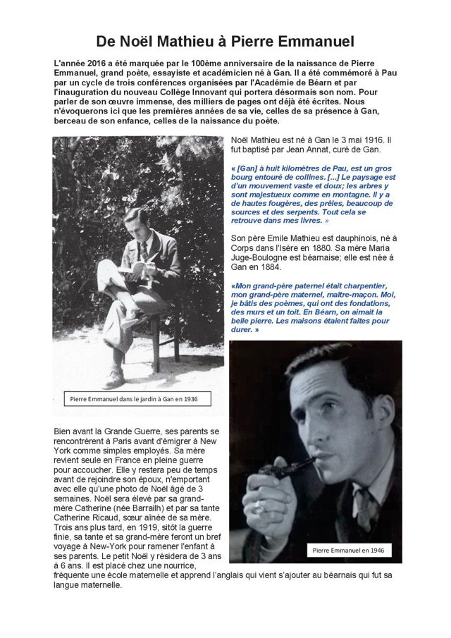

XIVe siècle
La porte de Gan
La porte de la prison date du XIVe siècle et a été classée monument historique en 1994.
De la bastide fondée en 1335 aux lieux que nous croisons chaque jour : un voyage dans le temps, à votre rythme.
La bastide a été fondée en 1335 par Gaston II de Foix-Béarn, qui lui donna le nom de la ville de Flandre dont il gardait le souvenir.
Gan devint vite un important lieu de passage de la transhumance. En 1385, elle comptait 175 feux et dépassait alors Pau en importance. Aujourd’hui, la commune compte un peu plus de 5 600 habitants et fait partie des zones d’appellation du vignoble du Jurançon et de l’AOC Béarn.
Sources : Wikipédia (article « Gan (Pyrénées-Atlantiques) ») et fiches de l’association.

Touchez une date pour découvrir ce qui s’est passé à Gan. Vous pouvez aussi utiliser les flèches du clavier ou les boutons « Précédent » et « Suivant ».
« Lorsqu’en janvier 1993, Jean-Pierre Lacoste immobilisa la dernière pierre tout en haut du nouveau fronton en plein-cintre, il ne pensa peut-être pas que ces mêmes gestes avaient déjà été exécutés plus de deux siècles avant lui par un autre artisan-maçon de Gan. »
Fiche n° 1 de l’association, par Daniel Trallero. Depuis 1975, la voûte extérieure s’était mise à s’écrouler ; la restauration a été menée en urgence pendant l’hiver 1992-1993.
Lire la fiche complète
 En 1975Après restauration (1997)
En 1975Après restauration (1997)
Faites glisser la poignée (ou utilisez les flèches du clavier).
Six lieux à repérer lors d’une promenade.
La porte de la prison date du XIVe siècle et a été classée monument historique en 1994.

L’une des trois belles maisons du XVIe siècle à tourelle et escalier en vis de la bastide. On l’appelle à tort « maison Jeanne d’Albret » : la date de 1593 est gravée sur le linteau.
Lire la fiche
Maison natale de Pierre de Marca, l’enfant le plus illustre de Gan.
Lire la ficheDes « bains romains » qui ne le sont pas : la date de 1748 est gravée sur la clef de voûte. Sauvés en 1993, ils se visitent en contrebas de l’avenue des Pyrénées.
Lire la fiche
L’église Saint-Pierre du Haut-de-Gan date de 1838, mais elle est attestée dès 1759. L’église Saint-Barthélemy se trouve, elle, dans le bourg.

Une petite halle de fer bâtie place Henri IV, en souvenir de la scierie Bourdeu dont elle reprend la charpente métallique.
Lire la fiche
Né à Gan le 24 janvier 1594, docteur à 21 ans, président du Parlement de Navarre, il écrit l’« Histoire de Béarn », référence encore aujourd’hui sur le Béarn avant le XIVe siècle. Conseiller d’État de Louis XIII en 1640, il choisit ensuite la carrière ecclésiastique et devient archevêque. Il parlait le latin, le grec, l’espagnol, le béarnais et plus tard le catalan.
Lire la fiche
Le poète est né Noël Mathieu à Gan, le 3 mai 1916. « Gan, à huit kilomètres de Pau, est un gros bourg entouré de collines », écrivait-il ; « tout cela se retrouve dans mes livres ». Notre fiche n° 18, « De Noël Mathieu à Pierre Emmanuel », revient sur ses racines gantoises.
Lire la ficheAutres figures à découvrir dans les fiches : Henri IV et la vigne de Gaye (n° 2), Louis Bidau (n° 9), le Dr Pierre Baudot (n° 12), le commandant Cazendres (n° 13). Parmi les personnalités nées ou attachées à Gan, on compte aussi l’écrivaine Paule Constant, prix Goncourt 1998.
Textes parus ou inédits sur différents thèmes de l’histoire de Gan. Chaque fiche s’ouvre sur le site de l’association, où elle se lit à l’écran ou se télécharge en PDF.